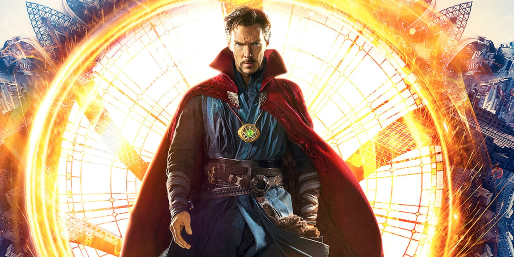

WANTED
Dead or alive!
Dr. Strange

Wanted For:
Breaking the Laws of Time
Creating the Multiverse
Use of Unimaginable Magic
Opening Portals around the Globe
Criminal intimidation
Responsible for the 5-year Blip
Sacrificing his Friend(s)